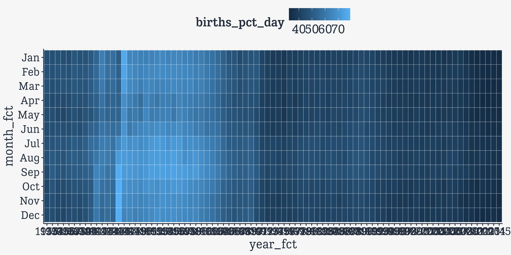
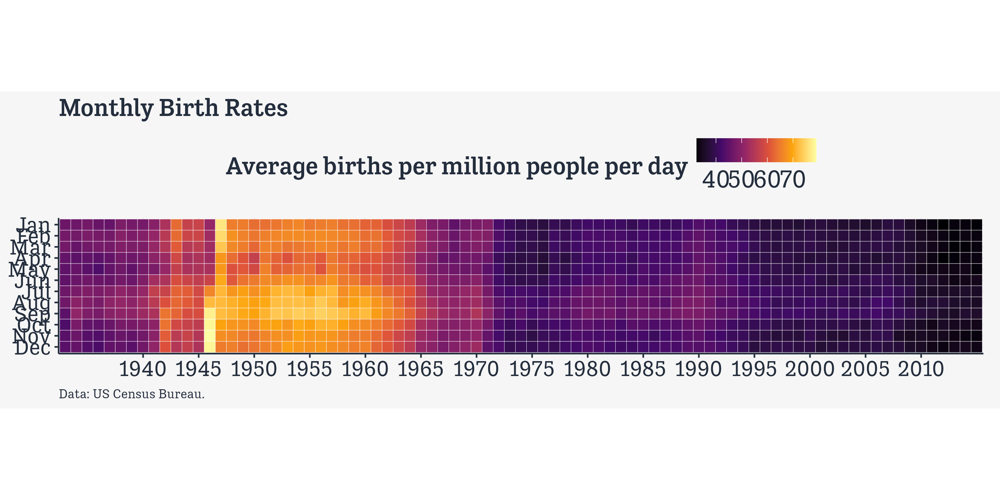
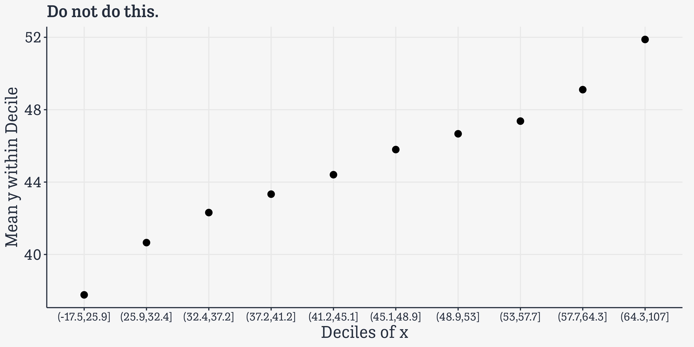

library(here) # manage file paths
library(socviz) # data and some useful functions
library(tidyverse) # your friend and mine
library(broom) # tidy model summaries
library(scales) # scale fns
library(colorspace) # palettes and scales
library(gapminder) # inescapable
library(covdata) # some data on covid
library(demog) # us demographic data
library(nycflights13) # 2013 LGA flights‘Big’ Data with R and ggplot
VCS, Rice 2025
Kieran Healy
Duke University
March 2025
Workshop materials
Workshop materials (and more besides) are available at https://github.com/kjhealy/vcs-bigdata-packet
You can get a zip file of everything at https://github.com/kjhealy/vcs-bigdata-packet/archive/refs/heads/main.zip
Or clone the repository if you are familiar with git.
Load some packages
‘Big’ Data?
‘Big’ Data is just data, except there’s more of everything
Pig Data
Benny’s dilemma.
Pig Data
Benny has a brother now. He wanted one. And then he got one.
Some Datasets
# A tibble: 344 × 8
species island bill_length_mm bill_depth_mm flipper_length_mm body_mass_g
<fct> <fct> <dbl> <dbl> <int> <int>
1 Adelie Torgersen 39.1 18.7 181 3750
2 Adelie Torgersen 39.5 17.4 186 3800
3 Adelie Torgersen 40.3 18 195 3250
4 Adelie Torgersen NA NA NA NA
5 Adelie Torgersen 36.7 19.3 193 3450
6 Adelie Torgersen 39.3 20.6 190 3650
7 Adelie Torgersen 38.9 17.8 181 3625
8 Adelie Torgersen 39.2 19.6 195 4675
9 Adelie Torgersen 34.1 18.1 193 3475
10 Adelie Torgersen 42 20.2 190 4250
# ℹ 334 more rows
# ℹ 2 more variables: sex <fct>, year <int>N = 344
Some Datasets
# A tibble: 1,704 × 6
country continent year lifeExp pop gdpPercap
<fct> <fct> <int> <dbl> <int> <dbl>
1 Afghanistan Asia 1952 28.8 8425333 779.
2 Afghanistan Asia 1957 30.3 9240934 821.
3 Afghanistan Asia 1962 32.0 10267083 853.
4 Afghanistan Asia 1967 34.0 11537966 836.
5 Afghanistan Asia 1972 36.1 13079460 740.
6 Afghanistan Asia 1977 38.4 14880372 786.
7 Afghanistan Asia 1982 39.9 12881816 978.
8 Afghanistan Asia 1987 40.8 13867957 852.
9 Afghanistan Asia 1992 41.7 16317921 649.
10 Afghanistan Asia 1997 41.8 22227415 635.
# ℹ 1,694 more rowsN = 1,704
Some Datasets
# A tibble: 62,466 × 25
year id ballot age degree race sex siblings kids bigregion income16
<dbl> <dbl> <labe> <lab> <fct> <fct> <fct> <fct> <fct> <fct> <fct>
1 1972 1 NA 23 Bache… White Fema… 3 0 Midwest <NA>
2 1972 2 NA 70 Lt Hi… White Male 4 4+ Midwest <NA>
3 1972 3 NA 48 High … White Fema… 5 4+ Midwest <NA>
4 1972 4 NA 27 Bache… White Fema… 5 0 Midwest <NA>
5 1972 5 NA 61 High … White Fema… 2 2 Midwest <NA>
6 1972 6 NA 26 High … White Male 1 0 Midwest <NA>
7 1972 7 NA 28 High … White Male 6+ 2 Midwest <NA>
8 1972 8 NA 27 Bache… White Male 1 0 Midwest <NA>
9 1972 9 NA 21 High … Black Fema… 2 2 South <NA>
10 1972 10 NA 30 High … Black Fema… 6+ 4+ South <NA>
# ℹ 62,456 more rows
# ℹ 14 more variables: religion <fct>, marital <fct>, padeg <fct>, madeg <fct>,
# partyid <fct>, polviews <fct>, happy <fct>, partners_rc <fct>, grass <fct>,
# zodiac <fct>, pres12 <labelled>, wtssall <dbl>, vpsu <dbl>, vstrat <dbl>N = 62,466
Some Datasets
# A tibble: 336,776 × 19
year month day dep_time sched_dep_time dep_delay arr_time sched_arr_time
<int> <int> <int> <int> <int> <dbl> <int> <int>
1 2013 1 1 517 515 2 830 819
2 2013 1 1 533 529 4 850 830
3 2013 1 1 542 540 2 923 850
4 2013 1 1 544 545 -1 1004 1022
5 2013 1 1 554 600 -6 812 837
6 2013 1 1 554 558 -4 740 728
7 2013 1 1 555 600 -5 913 854
8 2013 1 1 557 600 -3 709 723
9 2013 1 1 557 600 -3 838 846
10 2013 1 1 558 600 -2 753 745
# ℹ 336,766 more rows
# ℹ 11 more variables: arr_delay <dbl>, carrier <chr>, flight <int>,
# tailnum <chr>, origin <chr>, dest <chr>, air_time <dbl>, distance <dbl>,
# hour <dbl>, minute <dbl>, time_hour <dttm>N = 336,766
Some Datasets
# A tibble: 580,395 × 17
country_code cname iso2 continent iso3 year week sex split split_sex
<chr> <chr> <chr> <chr> <chr> <dbl> <dbl> <chr> <dbl> <dbl>
1 AUS Austral… AU Oceania AUS 2015 1 m 1 0
2 AUS Austral… AU Oceania AUS 2015 1 m 1 0
3 AUS Austral… AU Oceania AUS 2015 1 m 1 0
4 AUS Austral… AU Oceania AUS 2015 1 m 1 0
5 AUS Austral… AU Oceania AUS 2015 1 m 1 0
6 AUS Austral… AU Oceania AUS 2015 1 f 1 0
7 AUS Austral… AU Oceania AUS 2015 1 f 1 0
8 AUS Austral… AU Oceania AUS 2015 1 f 1 0
9 AUS Austral… AU Oceania AUS 2015 1 f 1 0
10 AUS Austral… AU Oceania AUS 2015 1 f 1 0
# ℹ 580,385 more rows
# ℹ 7 more variables: forecast <dbl>, approx_date <date>, age_group <chr>,
# death_count <dbl>, death_rate <dbl>, deaths_total <dbl>, rate_total <dbl>N = 580,395
Some Datasets
# A tibble: 2,254,515 × 7
country sub_region subregion_and_city geo_type date transportation_type
<chr> <chr> <chr> <chr> <date> <chr>
1 Albania Total Total country… 2020-01-13 driving
2 Albania Total Total country… 2020-01-14 driving
3 Albania Total Total country… 2020-01-15 driving
4 Albania Total Total country… 2020-01-16 driving
5 Albania Total Total country… 2020-01-17 driving
6 Albania Total Total country… 2020-01-18 driving
7 Albania Total Total country… 2020-01-19 driving
8 Albania Total Total country… 2020-01-20 driving
9 Albania Total Total country… 2020-01-21 driving
10 Albania Total Total country… 2020-01-22 driving
# ℹ 2,254,505 more rows
# ℹ 1 more variable: score <dbl>N = 2,254,515
Some Datasets
# A tibble: 7,808,311 × 10
rowid type sourceName sourceVersion device unit creationDate startDate
<int> <chr> <chr> <chr> <chr> <chr> <chr> <chr>
1 1 HKQuantit… Withings 6050301 <<HKD… count 2024-08-31 … 2024-05-…
2 2 HKQuantit… Withings 6050301 <<HKD… count 2024-08-31 … 2024-05-…
3 3 HKQuantit… Withings 6050301 <<HKD… count 2024-08-31 … 2024-05-…
4 4 HKQuantit… Withings 6050301 <<HKD… count 2024-08-31 … 2024-05-…
5 5 HKQuantit… Withings 6050301 <<HKD… count 2024-08-31 … 2024-05-…
6 6 HKQuantit… Withings 6050301 <<HKD… count 2024-08-31 … 2024-05-…
7 7 HKQuantit… Withings 6050301 <<HKD… count 2024-08-31 … 2024-05-…
8 8 HKQuantit… Withings 6050301 <<HKD… count 2024-08-31 … 2024-05-…
9 9 HKQuantit… Withings 6050301 <<HKD… count 2024-08-31 … 2024-05-…
10 10 HKQuantit… Withings 6050301 <<HKD… count 2024-08-31 … 2024-05-…
# ℹ 7,808,301 more rows
# ℹ 2 more variables: endDate <chr>, value <chr>N = 7,808,311. Entirely about me. On my phone.
Some Datasets
#> # Source: SQL [1 x 1]
#> # Database: DuckDB v1.1.1 [root@Darwin 24.0.0:R 4.4.1//Users/kjhealy/Documents/data/arcos_opioids_test/db/arcos.duckdb]
#> n
#> <dbl>
#> 1 178598026N = 178,598,026
This is the only one that’s even remotely “big” right now—i.e. that needs a database if I want to interact with it properly. Truly big data won’t fit on your laptop.
Pig Data
Benny’s brother screams and screams.
‘Big’ Data
More of everything
- More observations
- More patterns
- More possibilities
- More mess
- More cleaning
- More decisions
- More problems
But we stay the same
- Same perception
- Same cognitive limits
- Same graphs we know how to understand
- Same number of things we can reasonably pay attention to
- Same tendency to spin yarns when we see a pattern
Reduction Techniques
Alpha Channel
Alpha Channel
Or Cleveland-style
Limits
Hexbins?
Hexbins?
Hexbins?
Hexbins?
Simpler
Binning and Tiling Can Work
# A tibble: 1,644 × 12
year month n_days births total_pop births_pct births_pct_day date
<dbl> <dbl> <dbl> <dbl> <dbl> <dbl> <dbl> <date>
1 1938 1 31 51820 41215000 0.00126 40.6 1938-01-01
2 1938 2 28 47421 41215000 0.00115 41.1 1938-02-01
3 1938 3 31 54887 41215000 0.00133 43.0 1938-03-01
4 1938 4 30 54623 41215000 0.00133 44.2 1938-04-01
5 1938 5 31 56853 41215000 0.00138 44.5 1938-05-01
6 1938 6 30 53145 41215000 0.00129 43.0 1938-06-01
7 1938 7 31 53214 41215000 0.00129 41.6 1938-07-01
8 1938 8 31 50444 41215000 0.00122 39.5 1938-08-01
9 1938 9 30 50545 41215000 0.00123 40.9 1938-09-01
10 1938 10 31 50079 41215000 0.00122 39.2 1938-10-01
# ℹ 1,634 more rows
# ℹ 4 more variables: seasonal <dbl>, trend <dbl>, remainder <dbl>,
# country <chr>Binning and Tiling Can Work
# A tibble: 996 × 12
year month n_days births total_pop births_pct births_pct_day date
<dbl> <dbl> <dbl> <dbl> <dbl> <dbl> <dbl> <date>
1 1933 1 31 180545 125579000 0.00144 46.4 1933-01-01
2 1933 2 28 165986 125579000 0.00132 47.2 1933-02-01
3 1933 3 31 183762 125579000 0.00146 47.2 1933-03-01
4 1933 4 30 171354 125579000 0.00136 45.5 1933-04-01
5 1933 5 31 174811 125579000 0.00139 44.9 1933-05-01
6 1933 6 30 169255 125579000 0.00135 44.9 1933-06-01
7 1933 7 31 180880 125579000 0.00144 46.5 1933-07-01
8 1933 8 31 181856 125579000 0.00145 46.7 1933-08-01
9 1933 9 30 167637 125579000 0.00133 44.5 1933-09-01
10 1933 10 31 167055 125579000 0.00133 42.9 1933-10-01
# ℹ 986 more rows
# ℹ 4 more variables: seasonal <dbl>, trend <dbl>, remainder <dbl>,
# country <chr>Binning and Tiling Can Work
# A tibble: 996 × 14
year month n_days births total_pop births_pct births_pct_day date
<dbl> <dbl> <dbl> <dbl> <dbl> <dbl> <dbl> <date>
1 1933 1 31 180545 125579000 0.00144 46.4 1933-01-01
2 1933 2 28 165986 125579000 0.00132 47.2 1933-02-01
3 1933 3 31 183762 125579000 0.00146 47.2 1933-03-01
4 1933 4 30 171354 125579000 0.00136 45.5 1933-04-01
5 1933 5 31 174811 125579000 0.00139 44.9 1933-05-01
6 1933 6 30 169255 125579000 0.00135 44.9 1933-06-01
7 1933 7 31 180880 125579000 0.00144 46.5 1933-07-01
8 1933 8 31 181856 125579000 0.00145 46.7 1933-08-01
9 1933 9 30 167637 125579000 0.00133 44.5 1933-09-01
10 1933 10 31 167055 125579000 0.00133 42.9 1933-10-01
# ℹ 986 more rows
# ℹ 6 more variables: seasonal <dbl>, trend <dbl>, remainder <dbl>,
# country <chr>, year_fct <ord>, month_fct <ord>Binning and Tiling Can Work
okboomer |>
filter(country == "United States") |>
mutate(year_fct =
factor(year,
levels = unique(year),
ordered = TRUE),
month_fct = factor(month,
levels = rev(c(1:12)),
labels = rev(c("Jan", "Feb",
"Mar", "Apr", "May",
"Jun", "Jul", "Aug",
"Sep", "Oct", "Nov", "Dec")),
ordered = TRUE)) |>
select(year, month, year_fct, month_fct, everything())# A tibble: 996 × 14
year month year_fct month_fct n_days births total_pop births_pct
<dbl> <dbl> <ord> <ord> <dbl> <dbl> <dbl> <dbl>
1 1933 1 1933 Jan 31 180545 125579000 0.00144
2 1933 2 1933 Feb 28 165986 125579000 0.00132
3 1933 3 1933 Mar 31 183762 125579000 0.00146
4 1933 4 1933 Apr 30 171354 125579000 0.00136
5 1933 5 1933 May 31 174811 125579000 0.00139
6 1933 6 1933 Jun 30 169255 125579000 0.00135
7 1933 7 1933 Jul 31 180880 125579000 0.00144
8 1933 8 1933 Aug 31 181856 125579000 0.00145
9 1933 9 1933 Sep 30 167637 125579000 0.00133
10 1933 10 1933 Oct 31 167055 125579000 0.00133
# ℹ 986 more rows
# ℹ 6 more variables: births_pct_day <dbl>, date <date>, seasonal <dbl>,
# trend <dbl>, remainder <dbl>, country <chr>Binning and Tiling Can Work
okboomer |>
filter(country == "United States") |>
mutate(year_fct =
factor(year,
levels = unique(year),
ordered = TRUE),
month_fct = factor(month,
levels = rev(c(1:12)),
labels = rev(c("Jan", "Feb",
"Mar", "Apr", "May",
"Jun", "Jul", "Aug",
"Sep", "Oct", "Nov", "Dec")),
ordered = TRUE)) |>
select(year, month, year_fct, month_fct, everything()) |>
ggplot(aes(x = year_fct, y = month_fct))
Binning and Tiling Can Work
okboomer |>
filter(country == "United States") |>
mutate(year_fct =
factor(year,
levels = unique(year),
ordered = TRUE),
month_fct = factor(month,
levels = rev(c(1:12)),
labels = rev(c("Jan", "Feb",
"Mar", "Apr", "May",
"Jun", "Jul", "Aug",
"Sep", "Oct", "Nov", "Dec")),
ordered = TRUE)) |>
select(year, month, year_fct, month_fct, everything()) |>
ggplot(aes(x = year_fct, y = month_fct)) +
geom_tile(mapping = aes(fill = births_pct_day),
color = "white")
Binning and Tiling Can Work
okboomer |>
filter(country == "United States") |>
mutate(year_fct =
factor(year,
levels = unique(year),
ordered = TRUE),
month_fct = factor(month,
levels = rev(c(1:12)),
labels = rev(c("Jan", "Feb",
"Mar", "Apr", "May",
"Jun", "Jul", "Aug",
"Sep", "Oct", "Nov", "Dec")),
ordered = TRUE)) |>
select(year, month, year_fct, month_fct, everything()) |>
ggplot(aes(x = year_fct, y = month_fct)) +
geom_tile(mapping = aes(fill = births_pct_day),
color = "white") +
scale_x_discrete(breaks = seq(1940, 2010, 5))
Binning and Tiling Can Work
okboomer |>
filter(country == "United States") |>
mutate(year_fct =
factor(year,
levels = unique(year),
ordered = TRUE),
month_fct = factor(month,
levels = rev(c(1:12)),
labels = rev(c("Jan", "Feb",
"Mar", "Apr", "May",
"Jun", "Jul", "Aug",
"Sep", "Oct", "Nov", "Dec")),
ordered = TRUE)) |>
select(year, month, year_fct, month_fct, everything()) |>
ggplot(aes(x = year_fct, y = month_fct)) +
geom_tile(mapping = aes(fill = births_pct_day),
color = "white") +
scale_x_discrete(breaks = seq(1940, 2010, 5)) +
scale_fill_viridis_c(option = "B")
Binning and Tiling Can Work
okboomer |>
filter(country == "United States") |>
mutate(year_fct =
factor(year,
levels = unique(year),
ordered = TRUE),
month_fct = factor(month,
levels = rev(c(1:12)),
labels = rev(c("Jan", "Feb",
"Mar", "Apr", "May",
"Jun", "Jul", "Aug",
"Sep", "Oct", "Nov", "Dec")),
ordered = TRUE)) |>
select(year, month, year_fct, month_fct, everything()) |>
ggplot(aes(x = year_fct, y = month_fct)) +
geom_tile(mapping = aes(fill = births_pct_day),
color = "white") +
scale_x_discrete(breaks = seq(1940, 2010, 5)) +
scale_fill_viridis_c(option = "B") +
labs(x = NULL, y = NULL,
title = "Monthly Birth Rates",
fill = "Average births per million people per day",
caption = "Data: US Census Bureau.")
Binning and Tiling Can Work
okboomer |>
filter(country == "United States") |>
mutate(year_fct =
factor(year,
levels = unique(year),
ordered = TRUE),
month_fct = factor(month,
levels = rev(c(1:12)),
labels = rev(c("Jan", "Feb",
"Mar", "Apr", "May",
"Jun", "Jul", "Aug",
"Sep", "Oct", "Nov", "Dec")),
ordered = TRUE)) |>
select(year, month, year_fct, month_fct, everything()) |>
ggplot(aes(x = year_fct, y = month_fct)) +
geom_tile(mapping = aes(fill = births_pct_day),
color = "white") +
scale_x_discrete(breaks = seq(1940, 2010, 5)) +
scale_fill_viridis_c(option = "B") +
labs(x = NULL, y = NULL,
title = "Monthly Birth Rates",
fill = "Average births per million people per day",
caption = "Data: US Census Bureau.") +
coord_fixed()
Binning and Tiling Can Work
okboomer |>
filter(country == "United States") |>
mutate(year_fct =
factor(year,
levels = unique(year),
ordered = TRUE),
month_fct = factor(month,
levels = rev(c(1:12)),
labels = rev(c("Jan", "Feb",
"Mar", "Apr", "May",
"Jun", "Jul", "Aug",
"Sep", "Oct", "Nov", "Dec")),
ordered = TRUE)) |>
select(year, month, year_fct, month_fct, everything()) |>
ggplot(aes(x = year_fct, y = month_fct)) +
geom_tile(mapping = aes(fill = births_pct_day),
color = "white") +
scale_x_discrete(breaks = seq(1940, 2010, 5)) +
scale_fill_viridis_c(option = "B") +
labs(x = NULL, y = NULL,
title = "Monthly Birth Rates",
fill = "Average births per million people per day",
caption = "Data: US Census Bureau.") +
coord_fixed() +
guides(fill = guide_legend(keywidth = 3,
label.position = "bottom"))
Binning and Tiling Can Work
okboomer |>
filter(country == "United States") |>
mutate(year_fct =
factor(year,
levels = unique(year),
ordered = TRUE),
month_fct = factor(month,
levels = rev(c(1:12)),
labels = rev(c("Jan", "Feb",
"Mar", "Apr", "May",
"Jun", "Jul", "Aug",
"Sep", "Oct", "Nov", "Dec")),
ordered = TRUE)) |>
select(year, month, year_fct, month_fct, everything()) |>
ggplot(aes(x = year_fct, y = month_fct)) +
geom_tile(mapping = aes(fill = births_pct_day),
color = "white") +
scale_x_discrete(breaks = seq(1940, 2010, 5)) +
scale_fill_viridis_c(option = "B") +
labs(x = NULL, y = NULL,
title = "Monthly Birth Rates",
fill = "Average births per million people per day",
caption = "Data: US Census Bureau.") +
coord_fixed() +
guides(fill = guide_legend(keywidth = 3,
label.position = "bottom")) +
theme(legend.position = "bottom",
legend.title.position = "right",
legend.justification = "left")
Binning and Tiling Can Work
okboomer |>
filter(country == "United States") |>
mutate(year_fct =
factor(year,
levels = unique(year),
ordered = TRUE),
month_fct = factor(month,
levels = rev(c(1:12)),
labels = rev(c("Jan", "Feb",
"Mar", "Apr", "May",
"Jun", "Jul", "Aug",
"Sep", "Oct", "Nov", "Dec")),
ordered = TRUE)) |>
select(year, month, year_fct, month_fct, everything()) |>
ggplot(aes(x = year_fct, y = month_fct)) +
geom_tile(mapping = aes(fill = births_pct_day),
color = "white") +
scale_x_discrete(breaks = seq(1940, 2010, 5)) +
scale_fill_viridis_c(option = "B") +
labs(x = NULL, y = NULL,
title = "Monthly Birth Rates",
fill = "Average births per million people per day",
caption = "Data: US Census Bureau.") +
coord_fixed() +
guides(fill = guide_legend(keywidth = 3,
label.position = "bottom")) +
theme(legend.position = "bottom",
legend.title.position = "right",
legend.justification = "left") ->
p_tileboomBinning and Tiling Can Work
okboomer |>
filter(country == "United States") |>
mutate(year_fct =
factor(year,
levels = unique(year),
ordered = TRUE),
month_fct = factor(month,
levels = rev(c(1:12)),
labels = rev(c("Jan", "Feb",
"Mar", "Apr", "May",
"Jun", "Jul", "Aug",
"Sep", "Oct", "Nov", "Dec")),
ordered = TRUE)) |>
select(year, month, year_fct, month_fct, everything()) |>
ggplot(aes(x = year_fct, y = month_fct)) +
geom_tile(mapping = aes(fill = births_pct_day),
color = "white") +
scale_x_discrete(breaks = seq(1940, 2010, 5)) +
scale_fill_viridis_c(option = "B") +
labs(x = NULL, y = NULL,
title = "Monthly Birth Rates",
fill = "Average births per million people per day",
caption = "Data: US Census Bureau.") +
coord_fixed() +
guides(fill = guide_legend(keywidth = 3,
label.position = "bottom")) +
theme(legend.position = "bottom",
legend.title.position = "right",
legend.justification = "left") ->
p_tileboom
The Baby Boom as a tiled temporal heatmap
Distributions
The humble histogram cares not
(2.5M rows.)
‘Big’ Data often means Long Tails
flights |>
left_join(airlines, by = "carrier") |>
mutate(sname = str_squish(str_extract(name, "^.*? "))) |>
filter(sname %in% c("United", "JetBlue", "ExpressJet", "Delta",
"Delta", "American", "Envoy", "US", "Endeavor",
"Southwest")) |>
ggplot(aes(x = dep_delay, y = sname)) +
geom_boxplot() +
labs(y = NULL)‘Big’ Data can mean Long Tails
flights |>
left_join(airlines, by = "carrier") |>
mutate(sname = str_squish(str_extract(name, "^.*? "))) |>
filter(sname %in% c("United", "JetBlue", "ExpressJet", "Delta",
"Delta", "American", "Envoy", "US", "Endeavor",
"Southwest")) |>
ggplot(aes(x = dep_delay, y = sname)) +
geom_violin() +
labs(y = NULL)‘Big’ Data can mean Long Tails
flights |>
left_join(airlines, by = "carrier") |>
mutate(sname = str_squish(str_extract(name, "^.*? "))) |>
filter(sname %in% c("United", "JetBlue", "ExpressJet", "Delta",
"Delta", "American", "Envoy", "US", "Endeavor",
"Southwest")) |>
mutate(dep_delay_sq = squish(dep_delay, range = c(0, 120))) |>
ggplot(aes(x = dep_delay_sq, y = sname)) +
ggdist::stat_slab(density = "histogram", fill = "black") + labs(y = NULL)‘Big’ Data can mean Long Tails
Weak Associations
# A tibble: 50,000 × 2
x y
<dbl> <dbl>
1 55.9 34.6
2 41.4 61.1
3 65.1 45.7
4 50.4 45.3
5 64.5 70.3
6 55.8 81.7
7 36.1 19.0
8 27.8 81.2
9 47.6 55.1
10 21.2 30.8
# ℹ 49,990 more rows[1] 0.2006598By design, x and y are weakly correlated.
Scatterplot
You might be tempted
- Discretizing or binning a continuous variable in order to get a bit of leverage over a second variable is a thing people do, but generally should not.
- E.g., split
xinto deciles, then take the mean ofywithin eachxdecile.
deciles <- seq(0, 1, 0.1)
df <- df |>
mutate(x_c = cut(x, quantile(x, deciles))) |>
group_by(x_c) |>
summarize(y_mean = mean(y)) |>
drop_na()
df# A tibble: 10 × 2
x_c y_mean
<fct> <dbl>
1 (-17.5,25.9] 37.8
2 (25.9,32.4] 40.7
3 (32.4,37.2] 42.3
4 (37.2,41.2] 43.3
5 (41.2,45.1] 44.4
6 (45.1,48.9] 45.8
7 (48.9,53] 46.7
8 (53,57.7] 47.4
9 (57.7,64.3] 49.1
10 (64.3,107] 51.9Number go up
Again, Same Issues
palmerpenguins,gapminder,okboomer,diamonds,nycflights, andarcosdiffer by multiple orders of magnitude.
- But the same visualization issues tend to arise whether your data has 5,000 observations or 50 million.
Too Many Categories
Covid Symptoms

This data is not big, but it’s hard to represent!
Covid Symptoms
covid_df <- read_csv(here("examples", "covid-symptoms.csv"))
symptoms <- c("Anosmia", "Cough", "Fatigue",
"Diarrhea", "Breath", "Fever")
names(symptoms) <- symptoms
symptoms Anosmia Cough Fatigue Diarrhea Breath Fever
"Anosmia" "Cough" "Fatigue" "Diarrhea" "Breath" "Fever" # A tibble: 1,764 × 7
subset Anosmia Cough Fatigue Diarrhea Breath Fever
<chr> <lgl> <lgl> <lgl> <lgl> <lgl> <lgl>
1 Anosmia TRUE FALSE FALSE FALSE FALSE FALSE
2 Anosmia TRUE FALSE FALSE FALSE FALSE FALSE
3 Anosmia TRUE FALSE FALSE FALSE FALSE FALSE
4 Anosmia TRUE FALSE FALSE FALSE FALSE FALSE
5 Anosmia TRUE FALSE FALSE FALSE FALSE FALSE
6 Anosmia TRUE FALSE FALSE FALSE FALSE FALSE
7 Anosmia TRUE FALSE FALSE FALSE FALSE FALSE
8 Anosmia TRUE FALSE FALSE FALSE FALSE FALSE
9 Anosmia TRUE FALSE FALSE FALSE FALSE FALSE
10 Anosmia TRUE FALSE FALSE FALSE FALSE FALSE
# ℹ 1,754 more rowsCovid Symptoms
# remotes::install_github("krassowski/complex-upset")
library(ComplexUpset)
upset(data = covid_df, intersect = symptoms,
name="Symptom Groupings by Frequency. Total pool is 1,764 individuals.",
min_size = 0,
width_ratio = 0.125) +
labs(title = "Co-Occurence of COVID-19 Symptoms",
caption = "Data: covid.joinzoe.com/us | Graph: @kjhealy")Covid Symptoms

Other cases
# A tibble: 580,395 × 17
country_code cname iso2 continent iso3 year week sex split split_sex
<chr> <chr> <chr> <chr> <chr> <dbl> <dbl> <chr> <dbl> <dbl>
1 AUS Austral… AU Oceania AUS 2015 1 m 1 0
2 AUS Austral… AU Oceania AUS 2015 1 m 1 0
3 AUS Austral… AU Oceania AUS 2015 1 m 1 0
4 AUS Austral… AU Oceania AUS 2015 1 m 1 0
5 AUS Austral… AU Oceania AUS 2015 1 m 1 0
6 AUS Austral… AU Oceania AUS 2015 1 f 1 0
7 AUS Austral… AU Oceania AUS 2015 1 f 1 0
8 AUS Austral… AU Oceania AUS 2015 1 f 1 0
9 AUS Austral… AU Oceania AUS 2015 1 f 1 0
10 AUS Austral… AU Oceania AUS 2015 1 f 1 0
# ℹ 580,385 more rows
# ℹ 7 more variables: forecast <dbl>, approx_date <date>, age_group <chr>,
# death_count <dbl>, death_rate <dbl>, deaths_total <dbl>, rate_total <dbl>What we’re interested in
stmf |>
filter(sex == "b", year > 2014 & year < 2020) |>
select(cname, iso3, year:sex, age_group, death_rate, rate_total)# A tibble: 49,310 × 8
cname iso3 year week sex age_group death_rate rate_total
<chr> <chr> <dbl> <dbl> <chr> <chr> <dbl> <dbl>
1 Australia AUS 2015 1 b 0-14 0.000360 0.00639
2 Australia AUS 2015 1 b 15-64 0.00184 0.00639
3 Australia AUS 2015 1 b 65-74 0.0112 0.00639
4 Australia AUS 2015 1 b 75-84 0.0378 0.00639
5 Australia AUS 2015 1 b 85+ 0.127 0.00639
6 Australia AUS 2015 2 b 0-14 0.000334 0.00605
7 Australia AUS 2015 2 b 15-64 0.00172 0.00605
8 Australia AUS 2015 2 b 65-74 0.0108 0.00605
9 Australia AUS 2015 2 b 75-84 0.0341 0.00605
10 Australia AUS 2015 2 b 85+ 0.124 0.00605
# ℹ 49,300 more rowsMortality rankings: mean and max
rate_rank <- stmf |>
filter(sex == "b", year > 2014 & year < 2020) |>
group_by(country_code) |>
summarize(mean_rate = mean(rate_total, na.rm = TRUE)) |>
mutate(rate_rank = rank(mean_rate))
rate_max_rank <- stmf |>
filter(sex == "b", year == 2020) |>
group_by(country_code) |>
summarize(covid_max = max(rate_total, na.rm = TRUE)) |>
mutate(covid_max_rank = rank(covid_max))Mortality rankings: mean and max
# A tibble: 38 × 3
country_code mean_rate rate_rank
<chr> <dbl> <dbl>
1 AUS 0.00653 5
2 AUT 0.00923 19
3 BEL 0.00960 21
4 BGR 0.0153 38
5 CAN 0.00750 9
6 CHE 0.00790 11
7 CHL 0.00604 3
8 CZE 0.0104 26
9 DEUTNP 0.0113 30
10 DNK 0.00928 20
# ℹ 28 more rowsSelect the columns; merge the ranks
df <- stmf |>
filter(sex == "b", year > 2014, year < 2021,
country_code %in% c("AUT", "BEL", "CHE", "DEUTNP", "DNK", "ESP", "FIN", "FRATNP", "GBR_SCO", "GBRTENW",
"GRC", "HUN", "ITA", "LUX", "POL", "NLD", "NOR", "PRT", "SWE", "USA")) |>
filter(!(year == 2020 & week > 53)) |>
group_by(cname, year, week) |>
mutate(yr_ind = year %in% 2020) |>
slice(1) |>
left_join(rate_rank, by = "country_code") |>
left_join(rate_max_rank, by = "country_code")
df# A tibble: 6,279 × 22
# Groups: cname, year, week [6,279]
country_code cname iso2 continent iso3 year week sex split split_sex
<chr> <chr> <chr> <chr> <chr> <dbl> <dbl> <chr> <dbl> <dbl>
1 AUT Austria AT Europe AUT 2015 1 b 0 0
2 AUT Austria AT Europe AUT 2015 2 b 0 0
3 AUT Austria AT Europe AUT 2015 3 b 0 0
4 AUT Austria AT Europe AUT 2015 4 b 0 0
5 AUT Austria AT Europe AUT 2015 5 b 0 0
6 AUT Austria AT Europe AUT 2015 6 b 0 0
7 AUT Austria AT Europe AUT 2015 7 b 0 0
8 AUT Austria AT Europe AUT 2015 8 b 0 0
9 AUT Austria AT Europe AUT 2015 9 b 0 0
10 AUT Austria AT Europe AUT 2015 10 b 0 0
# ℹ 6,269 more rows
# ℹ 12 more variables: forecast <dbl>, approx_date <date>, age_group <chr>,
# death_count <dbl>, death_rate <dbl>, deaths_total <dbl>, rate_total <dbl>,
# yr_ind <lgl>, mean_rate <dbl>, rate_rank <dbl>, covid_max <dbl>,
# covid_max_rank <dbl>And make the plot
# A tibble: 6,279 × 22
# Groups: cname, year, week [6,279]
country_code cname iso2 continent iso3 year week sex split split_sex
<chr> <chr> <chr> <chr> <chr> <dbl> <dbl> <chr> <dbl> <dbl>
1 AUT Austria AT Europe AUT 2015 1 b 0 0
2 AUT Austria AT Europe AUT 2015 2 b 0 0
3 AUT Austria AT Europe AUT 2015 3 b 0 0
4 AUT Austria AT Europe AUT 2015 4 b 0 0
5 AUT Austria AT Europe AUT 2015 5 b 0 0
6 AUT Austria AT Europe AUT 2015 6 b 0 0
7 AUT Austria AT Europe AUT 2015 7 b 0 0
8 AUT Austria AT Europe AUT 2015 8 b 0 0
9 AUT Austria AT Europe AUT 2015 9 b 0 0
10 AUT Austria AT Europe AUT 2015 10 b 0 0
# ℹ 6,269 more rows
# ℹ 12 more variables: forecast <dbl>, approx_date <date>, age_group <chr>,
# death_count <dbl>, death_rate <dbl>, deaths_total <dbl>, rate_total <dbl>,
# yr_ind <lgl>, mean_rate <dbl>, rate_rank <dbl>, covid_max <dbl>,
# covid_max_rank <dbl>And make the plot

And make the plot
And make the plot
And make the plot
df |>
ggplot(aes(x = week,
y = rate_total,
color = yr_ind,
group = year)) +
scale_color_manual(values = c("gray70", "firebrick"),
labels = c("2015-2019", "2020")) +
scale_x_continuous(limits = c(1, 52),
breaks = c(1, seq(10, 50, 10)),
labels = as.character(c(1, seq(10, 50, 10)))) +
geom_line(linewidth = 0.9)And make the plot
df |>
ggplot(aes(x = week,
y = rate_total,
color = yr_ind,
group = year)) +
scale_color_manual(values = c("gray70", "firebrick"),
labels = c("2015-2019", "2020")) +
scale_x_continuous(limits = c(1, 52),
breaks = c(1, seq(10, 50, 10)),
labels = as.character(c(1, seq(10, 50, 10)))) +
geom_line(linewidth = 0.9) +
facet_wrap(~ reorder(cname, rate_rank, na.rm = TRUE), ncol = 5) And make the plot
df |>
ggplot(aes(x = week,
y = rate_total,
color = yr_ind,
group = year)) +
scale_color_manual(values = c("gray70", "firebrick"),
labels = c("2015-2019", "2020")) +
scale_x_continuous(limits = c(1, 52),
breaks = c(1, seq(10, 50, 10)),
labels = as.character(c(1, seq(10, 50, 10)))) +
geom_line(linewidth = 0.9) +
facet_wrap(~ reorder(cname, rate_rank, na.rm = TRUE), ncol = 5) +
labs(x = "Week of the Year", y = "Total Death Rate",
color = "Year", title = "Overall Weekly Death Rates",
caption = "Graph: @kjhealy. Data: Human Mortality Database, mortality.org") -> p_stmfdf |>
ggplot(aes(x = week,
y = rate_total,
color = yr_ind,
group = year)) +
scale_color_manual(values = c("gray70", "firebrick"),
labels = c("2015-2019", "2020")) +
scale_x_continuous(limits = c(1, 52),
breaks = c(1, seq(10, 50, 10)),
labels = as.character(c(1, seq(10, 50, 10)))) +
geom_line(linewidth = 0.9) +
facet_wrap(~ reorder(cname, rate_rank, na.rm = TRUE), ncol = 5) +
labs(x = "Week of the Year", y = "Total Death Rate",
color = "Year", title = "Overall Weekly Death Rates",
caption = "Graph: @kjhealy. Data: Human Mortality Database, mortality.org") -> p_stmfMaking a Lot of Figures
Split, Apply, Combine
dplyr is about splitting or grouping your data, doing something to it by applying a function, and then reassembling the result into a new table. The new table either has the same number of rows as the old one (if it’s a mutate() operation adding columns), or the same number of rows as there were groups (if it’s a summarize() operation).
# A tibble: 2,867 × 32
year id ballot age childs sibs degree race sex region income16
<dbl> <dbl> <labelled> <dbl> <dbl> <labe> <fct> <fct> <fct> <fct> <fct>
1 2016 1 1 47 3 2 Bache… White Male New E… $170000…
2 2016 2 2 61 0 3 High … White Male New E… $50000 …
3 2016 3 3 72 2 3 Bache… White Male New E… $75000 …
4 2016 4 1 43 4 3 High … White Fema… New E… $170000…
5 2016 5 3 55 2 2 Gradu… White Fema… New E… $170000…
6 2016 6 2 53 2 2 Junio… White Fema… New E… $60000 …
7 2016 7 1 50 2 2 High … White Male New E… $170000…
8 2016 8 3 23 3 6 High … Other Fema… Middl… $30000 …
9 2016 9 1 45 3 5 High … Black Male Middl… $60000 …
10 2016 10 3 71 4 1 Junio… White Male Middl… $60000 …
# ℹ 2,857 more rows
# ℹ 21 more variables: relig <fct>, marital <fct>, padeg <fct>, madeg <fct>,
# partyid <fct>, polviews <fct>, happy <fct>, partners <fct>, grass <fct>,
# zodiac <fct>, pres12 <labelled>, wtssall <dbl>, income_rc <fct>,
# agegrp <fct>, ageq <fct>, siblings <fct>, kids <fct>, religion <fct>,
# bigregion <fct>, partners_rc <fct>, obama <dbl>Split, Apply, Combine
Split, Apply, Combine
This pattern can get more complex, generally when the thing we are doing to the groups gets more complex, or we do it to more groups.
gss_sm |>
group_by(race, sex, degree) |>
summarize(mean_kids = mean(childs, na.rm = TRUE),
median_age = median(age, na.rm = TRUE))# A tibble: 34 × 5
# Groups: race, sex [6]
race sex degree mean_kids median_age
<fct> <fct> <fct> <dbl> <dbl>
1 White Male Lt High School 2.45 54
2 White Male High School 1.61 50
3 White Male Junior College 1.54 51
4 White Male Bachelor 1.35 47
5 White Male Graduate 1.71 54
6 White Female Lt High School 2.81 54
7 White Female High School 1.98 53
8 White Female Junior College 1.91 47
9 White Female Bachelor 1.44 51
10 White Female Graduate 1.38 55.5
# ℹ 24 more rowsGrouped analysis and list columns
Call:
lm(formula = lifeExp ~ log(gdpPercap), data = gapminder)
Residuals:
Min 1Q Median 3Q Max
-32.778 -4.204 1.212 4.658 19.285
Coefficients:
Estimate Std. Error t value Pr(>|t|)
(Intercept) -9.1009 1.2277 -7.413 1.93e-13 ***
log(gdpPercap) 8.4051 0.1488 56.500 < 2e-16 ***
---
Signif. codes: 0 '***' 0.001 '**' 0.01 '*' 0.05 '.' 0.1 ' ' 1
Residual standard error: 7.62 on 1702 degrees of freedom
Multiple R-squared: 0.6522, Adjusted R-squared: 0.652
F-statistic: 3192 on 1 and 1702 DF, p-value: < 2.2e-16We can’t do anything with this, programmatically.
Grouped analysis and list columns
# A tibble: 2 × 5
term estimate std.error statistic p.value
<chr> <dbl> <dbl> <dbl> <dbl>
1 (Intercept) -9.10 1.23 -7.41 1.93e-13
2 log(gdpPercap) 8.41 0.149 56.5 0 Much nicer. This is just a tibble. We know about those.
Grouped analysis and list columns
Imagine we want to fit this model on a subset of the gapminder data: European countries in 1977.
# A tibble: 30 × 6
country continent year lifeExp pop gdpPercap
<fct> <fct> <int> <dbl> <int> <dbl>
1 Albania Europe 1977 68.9 2509048 3533.
2 Austria Europe 1977 72.2 7568430 19749.
3 Belgium Europe 1977 72.8 9821800 19118.
4 Bosnia and Herzegovina Europe 1977 69.9 4086000 3528.
5 Bulgaria Europe 1977 70.8 8797022 7612.
6 Croatia Europe 1977 70.6 4318673 11305.
7 Czech Republic Europe 1977 70.7 10161915 14800.
8 Denmark Europe 1977 74.7 5088419 20423.
9 Finland Europe 1977 72.5 4738902 15605.
10 France Europe 1977 73.8 53165019 18293.
# ℹ 20 more rowsGrouped analysis and list columns
# A tibble: 2 × 5
term estimate std.error statistic p.value
<chr> <dbl> <dbl> <dbl> <dbl>
1 (Intercept) 29.5 7.16 4.12 0.000306
2 log(gdpPercap) 4.49 0.756 5.94 0.00000217What if we want to do this for all combinations of continent/year?
Grouped analysis and list columns
# A tibble: 2 × 5
term estimate std.error statistic p.value
<chr> <dbl> <dbl> <dbl> <dbl>
1 (Intercept) 29.5 7.16 4.12 0.000306
2 log(gdpPercap) 4.49 0.756 5.94 0.00000217What if we want to do this for all combinations of continent/year?
Split. Apply. Combine.
Grouped analysis and list columns
# A tibble: 60 × 3
# Groups: continent, year [60]
continent year data
<fct> <int> <list>
1 Asia 1952 <tibble [33 × 4]>
2 Asia 1957 <tibble [33 × 4]>
3 Asia 1962 <tibble [33 × 4]>
4 Asia 1967 <tibble [33 × 4]>
5 Asia 1972 <tibble [33 × 4]>
6 Asia 1977 <tibble [33 × 4]>
7 Asia 1982 <tibble [33 × 4]>
8 Asia 1987 <tibble [33 × 4]>
9 Asia 1992 <tibble [33 × 4]>
10 Asia 1997 <tibble [33 × 4]>
# ℹ 50 more rowsThink of nesting as a kind of “super-grouping”. Look in the object inspector.
Grouped analysis and list columns
It’s still in there.
# A tibble: 30 × 6
# Groups: continent, year [1]
continent year country lifeExp pop gdpPercap
<fct> <int> <fct> <dbl> <int> <dbl>
1 Europe 1977 Albania 68.9 2509048 3533.
2 Europe 1977 Austria 72.2 7568430 19749.
3 Europe 1977 Belgium 72.8 9821800 19118.
4 Europe 1977 Bosnia and Herzegovina 69.9 4086000 3528.
5 Europe 1977 Bulgaria 70.8 8797022 7612.
6 Europe 1977 Croatia 70.6 4318673 11305.
7 Europe 1977 Czech Republic 70.7 10161915 14800.
8 Europe 1977 Denmark 74.7 5088419 20423.
9 Europe 1977 Finland 72.5 4738902 15605.
10 Europe 1977 France 73.8 53165019 18293.
# ℹ 20 more rowsGrouped analysis and list columns
Here we apply or map() a custom function to every row in the data column.
Grouped analysis and list columns
# A tibble: 60 × 4
# Groups: continent, year [60]
continent year data model
<fct> <int> <list> <list>
1 Asia 1952 <tibble [33 × 4]> <lm>
2 Asia 1957 <tibble [33 × 4]> <lm>
3 Asia 1962 <tibble [33 × 4]> <lm>
4 Asia 1967 <tibble [33 × 4]> <lm>
5 Asia 1972 <tibble [33 × 4]> <lm>
6 Asia 1977 <tibble [33 × 4]> <lm>
7 Asia 1982 <tibble [33 × 4]> <lm>
8 Asia 1987 <tibble [33 × 4]> <lm>
9 Asia 1992 <tibble [33 × 4]> <lm>
10 Asia 1997 <tibble [33 × 4]> <lm>
# ℹ 50 more rowsGrouped analysis and list columns
We can tidy the nested models, too.
Grouped analysis and list columns
# A tibble: 48 × 9
# Groups: continent, year [48]
continent year data model term estimate std.error statistic p.value
<fct> <int> <list> <list> <chr> <dbl> <dbl> <dbl> <dbl>
1 Asia 1952 <tibble> <lm> log(gdp… 4.16 1.25 3.33 2.28e-3
2 Asia 1957 <tibble> <lm> log(gdp… 4.17 1.28 3.26 2.71e-3
3 Asia 1962 <tibble> <lm> log(gdp… 4.59 1.24 3.72 7.94e-4
4 Asia 1967 <tibble> <lm> log(gdp… 4.50 1.15 3.90 4.77e-4
5 Asia 1972 <tibble> <lm> log(gdp… 4.44 1.01 4.41 1.16e-4
6 Asia 1977 <tibble> <lm> log(gdp… 4.87 1.03 4.75 4.42e-5
7 Asia 1982 <tibble> <lm> log(gdp… 4.78 0.852 5.61 3.77e-6
8 Asia 1987 <tibble> <lm> log(gdp… 5.17 0.727 7.12 5.31e-8
9 Asia 1992 <tibble> <lm> log(gdp… 5.09 0.649 7.84 7.60e-9
10 Asia 1997 <tibble> <lm> log(gdp… 5.11 0.628 8.15 3.35e-9
# ℹ 38 more rowsGrouped analysis and list columns
# A tibble: 5 × 9
continent year data model term estimate std.error statistic p.value
<fct> <int> <list> <list> <chr> <dbl> <dbl> <dbl> <dbl>
1 Africa 1977 <tibble> <lm> log(gdpP… 4.51 0.920 4.90 1.04e-5
2 Americas 1987 <tibble> <lm> log(gdpP… 7.10 1.14 6.25 2.22e-6
3 Africa 1992 <tibble> <lm> log(gdpP… 7.33 1.10 6.64 2.22e-8
4 Americas 1962 <tibble> <lm> log(gdpP… 10.4 2.27 4.57 1.35e-4
5 Asia 1952 <tibble> <lm> log(gdpP… 4.16 1.25 3.33 2.28e-3Nesting other things
Let’s go back to this stage:
# New model
fit_ols2 <- function(df) {
lm(lifeExp ~ log(gdpPercap) + log(pop), data = df)
}
df_tidy <- gapminder |>
group_by(continent, year) |>
nest() |>
mutate(model = map(data, fit_ols2),
tidied = map(model, tidy))
df_tidy# A tibble: 60 × 5
# Groups: continent, year [60]
continent year data model tidied
<fct> <int> <list> <list> <list>
1 Asia 1952 <tibble [33 × 4]> <lm> <tibble [3 × 5]>
2 Asia 1957 <tibble [33 × 4]> <lm> <tibble [3 × 5]>
3 Asia 1962 <tibble [33 × 4]> <lm> <tibble [3 × 5]>
4 Asia 1967 <tibble [33 × 4]> <lm> <tibble [3 × 5]>
5 Asia 1972 <tibble [33 × 4]> <lm> <tibble [3 × 5]>
6 Asia 1977 <tibble [33 × 4]> <lm> <tibble [3 × 5]>
7 Asia 1982 <tibble [33 × 4]> <lm> <tibble [3 × 5]>
8 Asia 1987 <tibble [33 × 4]> <lm> <tibble [3 × 5]>
9 Asia 1992 <tibble [33 × 4]> <lm> <tibble [3 × 5]>
10 Asia 1997 <tibble [33 × 4]> <lm> <tibble [3 × 5]>
# ℹ 50 more rowsA function to draw a coef plot
Use it in a single case
Use it in a single case
Do it for every case
We want to do exactly this just for the subset of data created by every combination of continent/year. Which is to say, every row of our nested data.
When we have two arguments to feed a function we can use map2(). The general case is pmap(), for passing any number of arguments as a list. To apply the mod_plot() function to each row, we need to pass it the tidied model and the title of the plot.
Do it for every case
# A tibble: 60 × 7
# Groups: continent, year [60]
continent year data title model tidied ggout
<fct> <int> <list> <chr> <list> <list> <list>
1 Asia 1952 <tibble [33 × 4]> Asia 1952 <lm> <tibble [3 × 5]> <gg>
2 Asia 1957 <tibble [33 × 4]> Asia 1957 <lm> <tibble [3 × 5]> <gg>
3 Asia 1962 <tibble [33 × 4]> Asia 1962 <lm> <tibble [3 × 5]> <gg>
4 Asia 1967 <tibble [33 × 4]> Asia 1967 <lm> <tibble [3 × 5]> <gg>
5 Asia 1972 <tibble [33 × 4]> Asia 1972 <lm> <tibble [3 × 5]> <gg>
6 Asia 1977 <tibble [33 × 4]> Asia 1977 <lm> <tibble [3 × 5]> <gg>
7 Asia 1982 <tibble [33 × 4]> Asia 1982 <lm> <tibble [3 × 5]> <gg>
8 Asia 1987 <tibble [33 × 4]> Asia 1987 <lm> <tibble [3 × 5]> <gg>
9 Asia 1992 <tibble [33 × 4]> Asia 1992 <lm> <tibble [3 × 5]> <gg>
10 Asia 1997 <tibble [33 × 4]> Asia 1997 <lm> <tibble [3 × 5]> <gg>
# ℹ 50 more rowsNow, every element of the ggout column in df_tidy is …
A plot!

We don’t just put them in there for fun
- We can
walkthe plots out to disk
We don’t just put them in there for fun
- We can
walkthe plots out to disk
We don’t just put them in there for fun
We can e.g.
walkthe plots out to diskwalk()ismap()for when you just want a “side-effect” such as printed output. There is alsowalk2()andpwalk()
Peek again in the figures/ folder
[1] "Africa 1952.png" "Africa 1957.png" "Africa 1962.png"
[4] "Africa 1967.png" "Africa 1972.png" "Africa 1977.png"
[7] "Africa 1982.png" "Africa 1987.png" "Africa 1992.png"
[10] "Africa 1997.png" "Africa 2002.png" "Africa 2007.png"
[13] "Americas 1952.png" "Americas 1957.png" "Americas 1962.png"
[16] "Americas 1967.png" "Americas 1972.png" "Americas 1977.png"
[19] "Americas 1982.png" "Americas 1987.png" "Americas 1992.png"
[22] "Americas 1997.png" "Americas 2002.png" "Americas 2007.png"
[25] "Asia 1952.png" "Asia 1957.png" "Asia 1962.png"
[28] "Asia 1967.png" "Asia 1972.png" "Asia 1977.png"
[31] "Asia 1982.png" "Asia 1987.png" "Asia 1992.png"
[34] "Asia 1997.png" "Asia 2002.png" "Asia 2007.png"
[37] "Europe 1952.png" "Europe 1957.png" "Europe 1962.png"
[40] "Europe 1967.png" "Europe 1972.png" "Europe 1977.png"
[43] "Europe 1982.png" "Europe 1987.png" "Europe 1992.png"
[46] "Europe 1997.png" "Europe 2002.png" "Europe 2007.png"
[49] "Oceania 1952.png" "Oceania 1957.png" "Oceania 1962.png"
[52] "Oceania 1967.png" "Oceania 1972.png" "Oceania 1977.png"
[55] "Oceania 1982.png" "Oceania 1987.png" "Oceania 1992.png"
[58] "Oceania 1997.png" "Oceania 2002.png" "Oceania 2007.png"